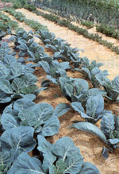

Weed Control Strategies
By Carol Mack
December/January 2002
In this special edition, meet the cast of expert gardeners who contribute to each issue's Almanac, and discover their
New England & Maritime Canada
ROBERTA BAILEY, WATERVILLE, MAINE
An organic gardener for 25 years, Roberta's current passions are breeding hot peppers and growing lots of garlic. Fourteenyears ago she joined Fedco Seeds where shetracks inventory, and raises and tests seedcrops. Fedco is a worker/consumer-ownedcooperative. Roberta describes Fedco as a"no frills, seasonal mail-order business, providing quality products at affordable priceswhile paying employees a living wage. We sellonly untreated seed, the best of the hybridsand open-pollinated and heirloom varieties."
[Fedco Seeds; P.O. Box 520; Waterville, Maine 04903; www.fedcoseeds.com ]
"My favorite weed control is mulching. It controls weeds, regulates moisture, encourages microbial activity and looks great. Over sod or very weedy areas, I lay down cardboard then cover it with straw, hay, grass clippings or wood chips. The sod dies, the cardboard rots away, the ground gets fed. Any weeds that do poke through are easily pulled. I use this method between rows of berries, asparagus and perennials, and around the grape arbor and fruit trees. It's great for killing sod and opening up new ground."
Mid-Atlantic
CRICKET RAKITA. MINERAL. VIRGINIA
Cricket has spent his adult life on the border between gardening and farming. He is dedicated to organic growing principles and supplying gardeners with great heirloom vegetable varieties. In 1999, Cricket took over thehelm of Southern Exposure Seed Exchange. Thecompany now offers more than 550 varieties ofopen pollinated vegetables and flowers, as wellas books and supplies to help customers savetheir own plants' seeds.
[Southern Exposure Seed Exchange; (540) 894-9480; www.southernexposure.com ]
"Nothing will tell you more about your soil than the weeds that grow in it-and that information can lead you to strategies for managing your specific weed problems and increasing soil fertility. For example, the presence of nutsedge signifies poor soil humus and porosity. Smartweed often grows in potassium-poor soil, while Canada thistle suggests low magnesium levels. Dock, foxtail, jimsonweed, johnsongrass, morning glory, wild nightshades and ragweed indicate a soil low in calcium and phosphorus. I recommend Charles Walters' book Weeds: Control Without Poisons to find out more-and I try to never let weeds go to seed!"
Gulf Coast
WILLIAM D. ADAMS, BURTON, TEXAS
Bill recently retired after more than30 years as the county extension agent for horticulture in Houston, Texas, where he wrote a weekly column for the Houston Chronicle and coordinated the Harris County Master Gardener program. He had more than 100 chickens, ducks and turkeys in his back yard at one point, with plans to photograph every chicken known to humanity. Bill now concentrates his energies on gardening, writing and photography.
"Weeds are unrelenting along the Gulf Coast! All summer we fight Bermuda grass, nut grass, crabgrass, goosegrass, Dallis grass, spurge, pigweed and others. Then winter arrives-usually for about two weeks-and we get new weeds chickweed, henbit and annual bluegrass. In most cases the answer to this dilemma is mulch, mulch, mulch. Last summer, I moved into a new place that demanded attention inside - hence no time for tilling a garden. So I just dug a hole in the Bermuda grass, added some compost plus slow-release fertilizer and planted a few tomatoes. Then I surrounded the plants with newspapers-eight to 10 sheets thick-covered with cypress mulch. Talk about notill farming! This spring I'll spread more newspapers and keep on planting. In the meantime radishes, lettuce, broccoli and other cool-season crops now are growing where the warm-season crops used to be."
Southern Interior
DEAN LOLLIS,
GREENWOOD. SOUTH CAROLINA
Dean interned for Park Seed Company while a student at Lander University. Eight years later (in 2001) he returned to Park, where he works in catalog production and assists gardening journalists. Park's nine acre trial gardens annually include more than 1,500 varieties, and Park catalogs have been going out to gardeners since 1868.
[Park Seed Company; (800) 845-3369; www.parkseed.com ]
"Gardeners in Southern regions often fight a year-round battle to keep weeds at bay, especially if the winters are mild. If you aren't into weed-pulling, there's another option-ignore them! The formal garden I was trying to grow in my back yard turned out to be a breeding ground for weeds and out-of-control grass. I opted for a new plan of attack. Now, much of my yard is grown as a naturalized area. When I group plants together in spots, I put them closer than recommended-it helps them form a mass that simply chokes out weeds, and I can easily keep the grass trimmed around and beneath them. A heavy layer of mulch also makes it difficult for unwanted growers to reach daylight."
Central/Midwest
CONNIE DAM-BYL. DUNDAS, ONTARIO
Gardening and selling seed are in Connie's blood. Her grandfather founded the William Dam Seed Company 53 years ago, and it has grown to offer 800 varieties of untreated seeds and the largest selection of organic seed in Canada. Readers are invited to wander the five acres of test gardens showcasing over 1,000 trial varieties.
[William Dam Seeds; (905) 628-6641; www.damseeds.com ]
"My father's advice was to 'pull weeds while they're young--and we did every day-a seemingly endless summer job during my youth! In clay soil like I have at home, using tools like a Ho-Mi (Asian hand cultivator) can help extract weeds. In our sandy-loam soil, we use a wheel hoe for aisles, and a push hoe and scrape hoe for working close to plants. In areas along driveways or on patios, I have found that pouring boiling water on the weeds is effective."
MATT BARTHEL, DECORAH, IOWA
Matt manages the regeneration and maintenance of more than 20,000 heirloom vegetable varieties and750 historic apple varieties that are being preserved at Seed Savers' Heritage farm in Decorah, Iowa. Seed Savers Exchange is a nonprofit organization that distributes heir loom garden seeds and conserves the vast genetic resource that the seeds represent. Seed Savers preservation projects are largely supported by 8,000 paying members and by public seed sales through the Seed Savers Catalog. Members of Seed Savers Exchange have access to more than 11,000 rare varieties of vegetables, fruits and grains.
[Seed Savers Exchange; (563) 3825990; www.seedsavers.org ]
"The weed war requires a good strategy to get a good crop. In the moist Midwest the battle is best fought early in the season. Weeds are most hurtful to young garden plants. Besides taking up space, they are hungry for moisture, nutrients and sunlight. Many garden plants seem to be able to deal with weeds once the plants approach maturity. Keep your garden relatively weed free through July, then relax and let weeds grow into fall."
North Central & Rockies
BILL MCDORMAN; HAILEY, IDAHO
Bill is a native of the 6,000 foot-high central Idaho valley where he founded Seeds Trust High Altitude Gardens. He's been smitten with the magic of gardening since he pulled a carrot out of his father's garden at the tender age of 3. His 18-year old company specializes in vegetables andwildflowersfrom around the world that are vigorous, mature early and tolerate harsh climates. His passion is to help gardeners rediscover the importance, rewards and magic of seed saving.
Seeds Trust High Altitude Gardens; (208) 788-4363; www.seedstrust.com ]
"In our dry mountain climate, my weed control strategy is to target the water to desired plants only-weeds are slow to grow in areas not watered. I use drip irrigation and equidistant planting in beds. I also avoid top watering. Seeds are planted so the leaves of each mature plant touch and form a canopy to block sunlight from later weeds. I find damp soil makes weeds easier to pull when hand control is needed - but I've learned to tolerate one of my old enemies, mallow, because its deep taproot loosens soil, and its leaves provide cover for beneficial insects and discourage other weeds."
Pacific Northwest
JOSH KIRSCHENBAUM,
COTTAGE GROVE, OREGON
Originally from Ohio, Josh learnedabout gardening in the Pacific Northwest as a community garden coordinator in Eugene, Oregon, where he helped transform an abandoned two-acre field into a viable, food producing garden. Since 1999 he has worked for Territorial Seed Company, where be helps grow and evaluate varieties at the company's 44-acre trial grounds and organic research farm in London Springs, Oregon. Territorial offers more than 800 varieties of seeds in two yearly catalogs (one for spring and one for winter gardening), and specializes in varieties that mature sequentially to fill in the gardening season. [Territorial Seed Company; (541) 942 9547; www.territorialseed.com ]
"Urban gardening is a soothing counterpoint for people who feel removed from nature. I live in a second-floor apartment with no balcony and fulfill my gardening passion with a plot in a local community garden. One drawback, however, is that no matter how well a plot is kept weeded, the weeds from a nearby plot readily creep back in. Mulching with compost, straw, or even plastic helps. I also plant cover crops such as Austrian field peas or crimson clover when the garden beds are not occupied with vegetables."
ROSE MARIE NICHOLS MCGEE.
ALBANY OREGON
Rose Marie lives and gardens in Oregon's Willamette Valley. She is the president of Nichols Garden Nursery, started by her parents Nick and Edith Nichols in1950. Now she and her husband Keane McGee continue the family tradition of organic gardening, and selecting the best varieties of vegetables, herbs and flowers. With more than 800 seed selections, there is always something in the Nichols catalog tempting for the gardener or cook. Rose Marie says you can grow the world in your backyard garden.
[Nichols Garden Nursery; (800) 4223985; www.nicholsgardennursery.com ]
"My earliest memories of gardening are associated with weeds. It is still a challenge that requires several strategies. Pull or hoe when the soil is damp and loose, and before weeds seed. Early planting and year-round gardening are two of our most valuable tools in weed control. Our biggest problem is with persistent rhizomatous grasses. The smallest piece of root is enough to start a new plant, so they are collected and discarded rather than composted. We create new beds with layers of newspaper, mulch and compost. These sit fallow for one season and then are planted in spring or fall with perennials, strawberries and transplants. Keep up the mulching, and in another season the bed becomes suitable for direct sowing."
Southwest
SUE AND CRAIG DREMANN, REDWOOD CITY, CALIFORNIA
Sue and her husband Craig are co-owners of Redwood City Seed Company. Founded in1971, it was one of the first companies to specialize in nonhybrid, traditional seeds. To find the best tasting selections, they go to the source: the indigenous peoples and countries where the varieties originated. Searching for the hottest pepper vari eties is Craig's passion, as well as consulting for large-scale reestablishment of native grasses in the West.
[Redwood City Seed Company; (650) 325-7333; www.ecoseeds.com ]
"In our region, weed removal can be the most consuming task of gardening, because weeding leaves a vacancy for another weed to take its place. Keep the 'occupied' sign out by doing the stomp, toss, stomp routine when you see a weed. Stomp on the weed to flatten it, toss a handful of wheat straw on top, and then stomp the straw in place. Eventually, with enough mulch, the soil will be loose and the few weeds that make it past the mulch will be easy to pull."
Almanac Editor
CAROL MACK, NEWPORT WASHINGTON
When Carol isn't hounding the contributors to get their advice submitted onschedule, you can find her in her garden or at the Washington State University Extension office where she coordinates the Pend Oreille County Master Gardener program. She and her husband live in the Northern Rockies, 50 miles south of the Canadian border (see "Reports from the Field," August/September 2001) and try every trick in the book to extend their short growing season.
"My worst weeds are the perennials that spread with runners, like quack grass. I once dug up a pocket-gopher tunnel system, and discovered storage rooms with quack grass rhizome pieces neatly stacked like cordwood. As if it needed help to spread everywhere! My best friend in the fight is my old turning fork-I can dig up the plant with the root system intact and just shake the soil loose so no fragments are left to regrow. I also use lots of cardboard and paper mulch, especially in large areas like the aisles between raised beds and under fruit trees. I've come to appreciate many annual weeds, and use them as a volunteer cover crop. I even let some, such as lamb's-quarter and pennycress, self-seed because they'll grow quickly next year in the cold spring soil where nothing is planted."
|
DAVID CAVAGNARO Grass clippings are the perfect garden mulch they suppress weeds and cost nothing. Plus they're rich in nitrogen and other nutrients, so you'll need little or no additional fertilizer. |
|
|
|
|
 |
|
|
|
|
 |